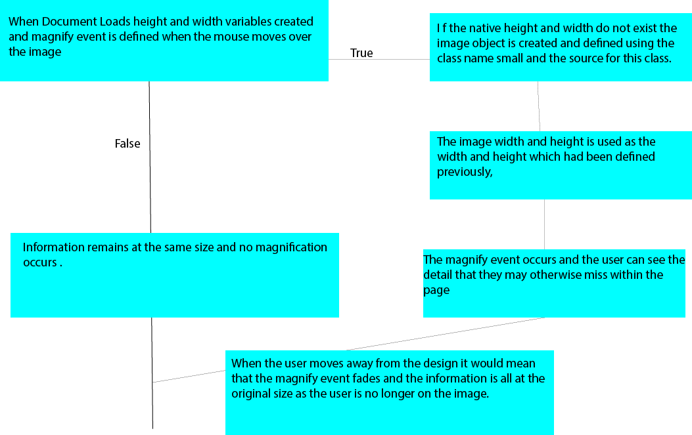

Weekly Learning Log
Week 1
Learning Summary
During the first week I was introduced to the module. This meant that I was able to gain an understanding of the work that was needed to complete this module successfully. I was also able to refresh my knowledge within HTML and CSS. This meant that I was able to refresh in my mind how to create different HTML elements such as forms and tables. During the first week I was also introduced to something that would be new to me and this was during the course overview lecture. I was introduced to the programming language JavaScript. I have previously looked a little at JavaScript However I Have not really looked at it in detail. I also began to think about the navigation and investigated how to create an interactive menu which suited the purpose of the webpage and also meant that the user would be able to identify each week easily. So throughout week one I was mainly refreshing the knowledge that I had in how to create different form elements within HTML.
Practical
The week one practical involved me being able to ensure that I could remember how to effectively create HTML forms and helped me to refresh how an external CSS file can communicate with the HTML so that the content of webpages would be well designed and would be visually appealing. This also allowed me to refresh the knowledge that I had in how to create a table within HTML. Also, during this practical I was able to learn how to create an effective single border at the top and the bottom of the personal information on the form. This meant that the form would have a more professional appearance. This also meant that all the form elements would be placed within the one key area and could be identified easily within the page. The practical also allowed me to refresh how to make use of radio and check boxes and this meant that an interactive form could be created which would make use of a range of different features. The radio buttons were created so that only one option from the list that was available to them. The checkboxes will allow them to select more than one option within that section of the form. This also meant that I was able to create a submit button which would open another page and display a message to the user when they have selected it. I was also able to refresh how a large text area could be created so that people would be able to enter a larger area of information than they would normally with a simple text area. This meant that the user would be able to add any comments that may be missing from the form. The text area would allow them to add any comments that they feel would be additional and has not been included on the form they have just filled out. I have also refreshed the knowledge that I have to create the reset button so that the form can be cleared when the user has perhaps made a mistake or wants to remove the information from the form and have all information removed so that they can start again. During this week’s practical I also investigated how to create a button so that the user would be able to submit the form and see another page thanking them for their visit. This meant that the user would be able to see that the form has actually performed an action when they have completed has done something because they have received a message back.
Also, within this week I created the webpage which the weekly learning log would be stored within and I also investigated how to create an effective way for the navigation bar to be shown within the page. This was done so that it would help the visual appearance of the page and would help to catch the users eye and meant that they would be able to discover the navigation structure easily.
Summary
So in week one I was able to refresh the knowledge that I already had gained within HTML and CSS because it had been a while since it had last been used so some of the elements that I had made use of previously were created so that they would be fresh in my memory again. I was also able to learn how to make use of new techniques such as a single border at the top and bottom of the form which made it look more professional.
Week 2
Learning Summary
Within the second week of the module I learned how it is possible to make a html file meet the xhtml standard. This was done by properly declaring the file type as xhtml at the top of the file. This meant that once I was able to gain an understanding of the structure that it should follow which included that all declared elements of the html file should be closed in the reverse order to how they had been opened. This meant that the document would match the xhtml format.
Also this week I was also able to refresh the knowledge that I had within how to ensure that the webpages that are created could be suitable for many people to make use of. This meant that I was able to refresh how important considerations such as colour choice can impact the usability of the website. I was also able to refresh how to ensure that images are accessible through the use of the alt tag to add a meaningful message to the image so that if the image does not load then this message will load and the user will be able to see exactly what the image is supposed to be instead of it being a blank area within the page. This week I also learned that if there is an audio file within the document and there should be a transcript available for them to make use of as they can not hear the file but they would be able to understand the information as they are able to read the information. This means that they would be able to get the most out of the document that is possible and also means that the website would be suitable for a wider range of people to make use of.
Colour scheme is also an important consideration to make when it comes to the design of a webpage. This is because you should not be relying on the colours that have been chosen especially if the colours are red and green this would hinder those who are colour blind from making use of the website, so you need to be careful when it comes to selecting the colour that you desire.
I also was able to refresh how text could have a resizer included so that people who have poor eyesight would be able to make use of the website this is because they would be able to increase the text size so that the information be easier for them to read within the webpages. This also means that they would be able to understand the information included within the webpage because they can actually make the information the size which would suit them.
Practical
This weeks practical activity involved me making changes to the form that had been created during the previous practical and this was done by me saving the practical under the new name of practical two which meant that the new changes would not over write the original. So during this weeks practical I was able to define the html document type as XHTML and made changes to ensure that the HTML document met the XHTML Standard. I also placed the form throught a validator to check if the form would meet the standard which had been defined. I worked to tweak the errors that it had thrown up. I worked down through them one by one until when the file was revaluated it had cleared the validation and had met the XHTML standard.
Also within this weeks practical I added in some accessibility features to the form which included an alt tag for the logo image at the top of the form. This also meant that I was able to ensure that information attached to different parts of the form were given the attribute label as they are labelling the different elements that make up the form. I also assigned ids to all of the elements that made up the form. This meant that each element had a unique identifier which would mean that they could be extracted from the form if needed within the website. The ID tag is unique because no two HTML elements can have the same ID name. So this means that each one is unique.
{kind=link}
Summary
So this week I was able to gain an understanding of how to make a HTML file suit the XHTML Standard and I was able to refresh how it is important to consider accessibility when creating a webpage so that there would be a wider audience and this means that it would attract the attention of more people as they would be able to get more out of the website. The practical task this week allowed me to ensure that this occurred through practice with adding in an alt tag for an image so that the user would be able to see what the image is supposed to be if it didn’t load. So I was able to refresh the different ways that you can make a website accessible to a wider range of people including through considering the colour scheme used and also through the inclusion of a text resizer.
Week 3
Learning Summary and Practical
Within this week I was introduced to the fundamentals of JavaScript. This is an object orientated programming language. This is incorporated into HTML files which would allow for the changes to be made to different elements which exist within the file which has been created. I was introduced to the fact that there are three different parts that exist within JavaScript which include the Browser Object Model, Document Object Model and core JavaScript.
I also learned how the Document Object Model can be used to create a diagram which helps to explain the structure that is made up within the webpages. The image below shows the Document Object Model structure for a webpage which allows you to change an image when you have hovered over it.
{kind=link}
There is also the link below which would show you the use of the onmouseover and the onmouseout functions have been used which would mean that the image will change when the user hovers over the image. This is when the mouse hovers over the image the image of the BMW will change from the interior of the car to the exterior image of the car. Then with the onmouseout the image returns to the image of the interior of the car.
Also, this week I learned how to create a link which when you hovered over it the colour of the background of the page. This is done using the onmouseover function so that the colour changes when the user hovers over it. The onmouseout option was also used here to ensure that the colour removed for the background which would mean that the background would return to its original appearance.
Also, this week I looked at variable and operators and how these are handled within JavaScript. The link below shows the example where I have looked at how variables are handled using operators which mean that I was able to learn how values can be changed using the operators within them.
I also learned this week the correct way to ensure that variables are written correctly this is because I learned what the rules are for writing out variables and one of these is that it must be an alphabetic character as the first character in the variable name and it can include numeric characters however these can not be the first letters within the variable names. I also learned that the only special character that can be used is the underscore which can also be the first character within the name.
I also learned how to incorporate multiple different lines of string into the one variable and then execute this to produce the result. This meant that I was able to form a sentence through adding more information to the initial value that had been loaded into the variable. I also learned how to write out a variable so that the result would be shown when the browser is opened.
window.document.write(myTextContainer); - This line shows that the result will be written out in the window when it is opened within the browser and it will load the variable defined to display the result from the scripting that had been written.
This week I also made use of operators within this week’s practical work which meant that I was able to gain an understanding of how these works to help give an output of values within the browser when these are run. I was able to see how the different operators work within the programming.
I have also learned this week that the professional standard of defining JavaScript is through the inclusion of the script tags within the head area of the html. This means that the scripting could be identified easily within the html files as they can be located within the file.
Week 4
Learning Summary and Practical
Within this week I learned how to properly make use of a web browser so that any errors that are present within the coding for the JavaScript would be able to ensure that the JavaScript could be debugged correctly. This means that I was able to follow the example given within the first part of this week's practical to be able to identify and fix all the errors that were within the Scripting. This was covered within the lecture as I was able to learn how to properly make use of a browser such as Mozilla Firefox which would mean that I was able to identify where the errors were and would then be able to correct these so that the code would run and the message that you want the script to output will be displayed within the screen. This is shown below with the code that has been corrected so that it will work and the message will be displayed.
Also, this week I learned how to make use of Functions within JavaScript. So, I was able to learn how to define a function correctly and allowed me to learn how to properly define a function and also how to call them so that an output would be displayed. This meant that I was able to look at a JavaScript and would be able to identify where the errors are and correct these so that the script would run.
I also learned how to make use of arrays within JavaScript. So, this week I was able to gain an understanding of how arrays can be used within JavaScript so that the data can be stored within an array. I also learned that an array can be used to store multiple variables. I also learned that when defining an array, the reference number always begins at 0. This week I also learned how to properly create an array which will store variables within JavaScript. I was also able to gain an understanding of the methods that could be used which will allow for the information stored within the array that has been created to be displayed within the browser.
This week I was also able to gain an understanding of how functions work within JavaScript. This was because I was able to learn how a function can call information which has been stored within the JavaScripting code. This means that I have been able to gain an understanding of how functions work within JavaScript and are able to use functions. This meant that i was able to take the time to create a function to display the information which related to the course that i am studying.
The last thing that I was able to learn this week was how to make use of an external JavaScript library to allow me to display the information on the course that I am studying through the inclusion of an external library. This meant that I was able to learn how to effectively link an external JavaScript file so that this programming language would be linked to a html file. This would mean that I was able to gain an understanding of how it is possible to make use of the JavaScript so that it can be placed within an external file and linked into the HTML. I also was able to refresh how it is possible to link more than one file.
Summary
So, this week I was able to gain an understanding of how arrays can be used within JavaScript to store data which can then be called out and displayed within the browser. I was also able to gain an understanding how a browser can be used to help debug the code and correct any errors that there may be within the JavaScript that has been written. This means that I was able to look at JavaScript and was able to identify the errors and fix them. I was also able to see how to properly link and structure JavaScript within an external file. I was also able to learn how a function can be used to output data within a browser this week also.
Week 5
Learning Summary and Practical
During week 5 I was able to learn how JavaScript can be used to communicate with a form and display information that the user has selected within the form. This is evidenced within the first practical. This was where a form had been created for course information that the user was able to select the uni course and campus that they are attending. This was the taken and displayed through the use of JavaScript. So through the first practical I was able to gain a further understanding of how JavaScript works. I was also able to learn how to properly call and display information from a doe, through the use of JavaScript.
I also learned how it is possible to use JavaScript within the form to display the information that the user has inputted through the use of the form. This meant that I was able to use JavaScript to handle information that had been inputted through the use of the form and displayed within the text area of the form. This meant that I was able to gain a better understanding of JavaScript and how it can be used to handle and produce the information that has been submitted into a form.
Also this week I was able to gain an understanding of how JavaScript can handle different objects which can make up the form that has been created. This included how it can be used to access checkboxes and also drop down selection menus which may be included within a form.
I was also able to gain a better understanding of how to make use of the correct options which allow you to display the result of the programming you have carried out through the use of JavaScript. This meant that I was able to understand when it would be suitable to use alert and when it would be suitable to use document.write and even document.getelementbyid.
I also learned that it is possible to produce this within the one html page through the extension .innerhtml. This meant that the information would be displayed within the current webpage that had been open.
So this week I was able to further develop the knowledge that I was gaining with how JavaScript works through how it can be used to display information that the user has entered within a form. This was brand new knowledge that I was able to gain because I have not investigated JavaScript before. So, I was able to learn new knowledge of how JavaScript can be used so that the webpages that have been produced are dynamic. So, this week I was able to gain knowledge of how JavaScript could be used to communicate with forms and output the information that the user has submitted and be provided with an output when the form was submitted.
This week I also learned how it is possible to output the information that has been created within the second of the practical I Learned how it is possible to display an option that has been selected which has been created as a radio button. This meant that as well as being able to return the value that they have actually inputted themselves I was able to output the option that they have selected through the use of radio buttons within the form. So, this meant that I was able to output an additional information from a selection group that the user has been able to select.
Using JavaScript, I was also able to learn that it is possible to output the information into the text area within a form. So, this meant that as well as being able to output the information that had been entered onto an external page I would be able to display this information internally into the form. This is demonstrated through Practical5 Q2 which is displayed below. So I was able to learn how to display the information that the user has inputted into the form in two different way within this weeks practical work. So I was able to develop my knowledge more with how JavaScript can be used to communicate with the html elements that make up a webpage.
Week 6
Learning Summary and Practical
Within week 6 I was able to further develop the knowledge that I was gaining within JavaScript. This was because this week I was able to develop an understanding of how to make use of the different forms of loops that exist to achieve different tasks within JavaScript. This included the use of the do while loop, the while loop and the for loop. This meant that I was able to gain an understanding of how the loops could be used within JavaScript to carry out different tasks.
This week I was able to gain an understanding of how the for loop can be used so that the I was able to produce a count to the number that the user has inputted into a form. This was produced within this week’s practical task. This meant that when the user has selected a number to input into the form and click the count button every number up to the entered number will be displayed. Through the completion of this within the practical it meant that I was able to further enhance my understanding of how the for loop would work. This also means that the numbers would all be displayed up to the entered number.
I was also able to make use of the do while loop which will do something while a condition is true. This was used for the count down function which will mean that the function will carry out a certain task if a condition is true. So, this meant that through the inclusion of this value I was able to display all the values from the value that had been entered to 0. This is another example shown within the practical that has been completed and this is for the count down numbers which meant that the numbers would start at the inputted value and would then count down until they reached the value 0. This meant that I was able to see how the do while loop operates and would be able to gain an understanding of when this would be appropriate to use.
I was also able to gain an understanding of another form of looping statement which was a while loop. This type of loop can be used to carry out a task while a condition is true. This means that you would be able to add up a range of numbers while it is smaller or equal to a set number and this will add up all the numbers until it reaches the set number and then the loop will end, and the final value will be returned.
So, this week I was able to further develop the knowledge that I was developing within JavaScript because I was able to gain an understanding of how loops can be used so that certain tasks could be completed. This is reflected within the practical that I have completed which can be accessed through the link below. This demonstrates how I have made use of each of the different loops to help me to effectively carry out tasks such as counting up and down numbers and also displaying odd and even numbers only between 0 and the number that has been inputted by the user.
Week 7
Learning Summary and Practical
During this week I was able to learn how to make use of conditional statements through the use of JavaScript to implement them. So this meant that I was able to gain an understanding of how it is possible to make use of an if statement to allow me to produce an output depending on a condition that has been set within the if statement which means that different output will be given for different values.
This if statement was used to help analyse the numerical values that the user has inputted into the text areas within the form and the. Calculated when the user clicks on the button. This means that the total will be calculated using JavaScript and then the average will be calculated for the values that have been inputted by the user. Then the if statement was used so that if the average was over 90 then the out put would tell them that they have gotten an A and their average would be outputted also. The other conditions where that if the mark was above 80% and below 90% then they would have a grade B message. An average beet week 70% and 80% would get them a grade C. An average between 60% and 70% would get them an output of a grade D. The final output would be grade E if the average was between 50% and 60%. These all would have the overall average for the four numbers that the user has inputted so that they would be aware of how their grade fits in with the code.
This coding was outputted to a pop up window through the use of the window.alert command within the JavaScript. This was used within the different levels of the if statement. This meant that the output that would be given to the user would match the conditions that had been set within the if statement.
I was also able to learn that there are different forms of if statement which are if else and an if, else if, else statements. These would be used for different options so the regular if statement would be used if there is only one condition to be met and an alternate option is selected. Whereas if you have multiple conditions the if else if statement would be selected as this would allow you to determine the multiple conditions that would need to be met. This would mean that there would be an output given which would vary depending on the condition that has been met.
I also learned how to make use of another conditional statement which is the switch statement. Which uses different cases to determine different conditions that had been met. This meant that I was able to learn how to make use of different conditional statements and where they would be the most suitable to be used within JavaScript. This meant that the correct conditional statement would be used for an appropriate purpose within the scripting that had been created.
This was the conditional statement that took me a little longer to get working effectively. This was used to display additional information which corresponds with the grade and average that has been calculated from the marks that have been inputted by the user within the form. This will display an additional message which will provide the user with feedback on how they are performing from the marks that they have received. This was the harder conditional statement to perfect because it relies on specific cases and an argument. I tried a variety of argument parameters within the switch statement which did not work how I expected them to. So after carrying out further research and studying a range of examples of switch statements I discovered that perhaps true would be the best option to select as this meant that this would run as long as the condition is true that is held within each case. These conditions are the same as they were for the if statement that had been created this was done so that if the average was equivalent to a grade that was discovered using the if statement that I have written previously.
So each grade that would be achieved depending on the average of the four entered marks would have a relevant additional message displayed alongside them so that you are able to see feedback on how you have done from the average that has been achieved.
Also this week I was able to learn how to make use of a for loop to allow me to calculate the total of the four numbers that had been entered into the form and submitted and then was able to calculate the average by dividing the total by the number of values that had been entered. This meant that the output given by the conditional statements would be calculated correct as they were dependent on average that had been calculated so that the correct output could be given.
Summary
So this week I was able to further develop my knowledge of how JavaScript can communicate with html through the use of a conditional statement which will mean that the output given will be different depending on which condition given within the if statement or switch statement that it has met. So this meant that I was able to develop my knowledge of JavaScript further through looking at and creating conditional statements to display an output depending on which condition that it has met which has been defined.
Week 8
Learning Summary and Practical
During this week I was able to learn how to make use of nested statements and also form validation. I was able to further my knowledge with how to use if statements within JavaScript when there are multiple conditions which if met will return a different outcome. This was done within the practical that had been carried out an input form where the user inputted their name, age and marital status to receive information on which class of insurance they would qualify for. This meant that certain rules had to be met for them to qualify for each of the different categories such as for class one they must be over 21 and under or 30 and married. So this meant that I was able to further my knowledge of conditional statements to be able to create this outcome effectively.
Also this week I was able to learn how it is possible to use JavaScript to carry out validation on a form that has been created. This was applied to one of the practicals that has been carried out through the use of JavaScript to validate the age that had been entered into the insurance form. This was done so that the user would receive a message to say that the age they have entered is not valid if the age is below 17 and they will also see a message to say that they have entered a valid age if the age entered is above 17 as this is the legal age which you are able to drive.
Another validation method that I was able to learn was that for the name JavaScript can be used to check that only letter have been used and this can either be lower case or upper case. The validation will give a message to say that only letters can be used for the name if there are other characters such as numbers included within the name and if the name is only made up of letters then they will see a message saying that name is valid.
Validation was used within the practical that had been completed because I made included a validation so that the name value within the form would only be submitted if the value was alphabetical. This meant that I was able to create the form which would mean that they would see a message appear in a pop up which would allow them to see that they have entered a numeric value into the name which should only contain alphabetic characters.
Validation was also used within the age input on the form. This is because the subject of the form was for car insurance so it made sense that this be validated so that if some entered an age below 17 they would receive a message to say that they have entered an invalid age which would mean that the code which had been created would not allow them to see an insurance policy as the age that had been entered had been shown to be below the minimum age which is required.
This was also used within the practical so that if there was a blank area on the form when it was submitted a message should be displayed to say that they are required to complete the form before they are able to continue. So this allowed me to be able to create a form with a range of validation techniques applied to it.
Also this week I was able to gain an understanding and learn how nested loops can be used within JavaScript to allow information to be displayed within a table. This would be a for loop which is placed within another for loop so that information could be displayed within a two dimensional array. This was done within the practical completed this week through the creation of a form which the user was able to input the number of rows and the number of columns that they could include within the table. Then when the button is clicked this will generate the table through the use of a JavaScript function called table which is called when the user clicks on the button within the form.
The document.write command was then used so that the html elements could be included within the JavaScript and this would allow for the creation of the table within the programming. The nested for loop was then created between the
So I was able to gain an understanding of how to make use of nested loops to carry out certain tasks such as information stored within a 2 dimensional tables such as shown within the practical this week where the user is asked to input two numbers to generate a table.
Also, this week within the timetable practical I used JavaScript programming so that the user would be able to enter the number of columns and rows which meant that the design which meant that they would be able to select the search button which would load upload the results for the location as to where the number nine could be located within the table when the search button would be clicked within the form. This also meant that the user is able to see the specific location of a number within the timestable that has been produced.
So I was able to gain a further understanding of JavaScript with how a nested for loop could be used so that the results would be appropriate and mean that it would match the values that have been entered into the form by the user as these have been used within the JavaScript statement to ensure that the work is appropriate.
The document.getElementById was selected so that the two necessary files were needed so that the correct information which was the row and column numbers could be included within the design which meant that the search funcition would be using the correct values so that an appropriate result could be given as it was making use of the values that had been entered by the user.
So I was able to gain a further understanding of how JavaScript could be used within the practical work that had been carried out as I was able to make use of nested loops so that the information could be stored in a two dimensional array and shown as a table within the results for the timetable generation and the search function was used so that the information would mean that the user would be able to see a specific result as to the location of a number from the timestable which would be generated to be the size that the user would like to give to them within the work that had been completed.
Summary
So this week I was able to further my knowledge with how JavaScript can be used to carry out form validation as this week I was introduced to how this can be used to validate the email and phone number and ensure they are sufficient entry and for the number that a valid amount of numbers have been entered so that it would match how a phone number should look before the form is submitted and the data entered is processed and then returned in a display. I was also able to ensure that the form which had been created which would mean that there would not be any information missing from the form the user would receive a message so that the user would mean that they would not leave any area of the form blank and would be able to ensure that they would be able to locate the missing area of the form easily.
Week 9
Learning Summary and Practical
Within this week we looked at further form validation through the use of JavaScript. This meant that the email could be properly checked that it matches how an email should look before the form information would be processed this means that the JavaScript will check to see if it includes the format which would be standard for an email including the “@“ symbol which is used within all emails. This means that if this is not present the user would be presented with the message please enter a valid email. This validation was carried out within this weeks practical work to ensure that the information which had been given would be appropriate and would match the standard for emails and the form would not process of this field was blank. The focus() method was also used so that when this message appears the user would be taken directly to the area for them to fill out the email this was done so that this would be given the focus of the user to see that they have not filled this part of the form out or have nor used the correct standard for an email.
Another method of form validation that was carried out this week was to validate the phone number that had been given. This was done so that the phone number entered would have the correct formatting so that it would appear like a phone number when the information would be processed within the form. This was done within the practical that had been carried out this week so that the information would all be displayed to meet the standard for a phone number and would also be recognisable as a phone number when the data entered the form would be processed. This meant that when the information has been entered the validation will be carried out so that the number will be formatted if there is an appropriate amount of numbers included within the phone number.
There will also be a message which is displayed which alerts the user to ensure that they have entered a phone number which is appropriate and as long as they have this will format the number automatically once the user moves onto another section of the form that they are going to be see the number automatically formatted has been shown within the text input area within the form.
These were two validation methods that we had been introduced to this week and they were also used within the practical so that we would be able to ensure that the information that had been entered into the form would be properly validated before they would be processed and displayed within the text area as the output for form data that had been entered by the user.
Also this week within the validation for forms within the practical I also looked at producing validation for if the form was submitted and it contained no data. This validation was carried out so that if this occurred there would be an alert message displayed which gave the user the message to enter their name. This means that this step within the form will mean that the user is made aware that they cannot leave the form blank and the information has to be valid for it to be processed.
Then these areas were then brought into focus through the use of focus() within the JavaScript statements that had been created. This meant that the blank areas were taken so that the user would be taken to this area within the design which would mean that the user would see the area that they have left blank which meant that the form could be fully filled out and would mean that the form could then be processed as there would be no empty fields left.
So during this week I was able to further develop my knowledge with how it is important for validation to be carried out on the data that has been entered into a form which will mean that the information that has been entered is valid and this would be important for an email as every email has a similar foundation and this needs to be shown within the form so it’s important that an acceptable email is entered and this was achieved through learning how to make use of the validation.
I also made use of an if statement and a for loop so that the checkbox within the form which would mean that the selected values from the checkbox within the form which was used within the practical would be displayed when the form was processed. This meant that instead of all the values being displayed the user would only see the values that they had entered within the form that had been created.
Also, within this week's practical I carried out validation on each of the elements of the form such as the name, address, email, number and post code so that the user would be given a message to say that the values are required so that the form will be completed when the form has been filled out. This also means that the user will be taken to the area which means that the user is aware where the information has been missed within the form through the use of the focus() method which will mean that that when the form is processed the missing information would be shown within the form. This would mean that the form would be able to ensure that the form has been fully completed.
Summary
So this week I was able to further my knowledge with how JavaScript can be used to carry out form validation as this week I was introduced to how this can be used to validate the email and phone number and ensure they are sufficient entry and for the number that a valid amount of numbers have been entered so that it would match how a phone number should look before the form is submitted and the data entered is processed and then returned in a display.
Week 10
Learning Summary and Practical
During week 10 I was able to further develop the knowledge that I have so far with how JavaScript can be used to help to create a series of rollover images. This was done with images for the names of the four of my favourite rally cars which have been selected as part of this weeks practical work that I completed. This was done using four images that I had captured myself. So I was introduced this week to how Javascript could be used so that when the user would interact with elements of the website they will see changes appear such as the image change that they have rolled over. This means that another interactive feature could be included within the website.
These skills were applied to the practical that was carried out this week so that the name of the car would change when the user hovered over it. This meant that they could clearly see which option they had hovered over as they would see a change applied to it. This was one form of a rollover which had been created through the creation of the JavaScript which meant that the rollover would be applied to specific images which had been created within the design. This was done within the practical so that the shadow would be made visible within the page when the user hovers over the option. This makes it clear to them which selection they have moved over.
The links opened the index page for the learning log that had been created when each of the links had been selected. This meant that the links would open a page for you which would mean that the design would be able to ensure that the user was taken somewhere, and the links were active which had been created.
Also, this week I was able to further my knowledge with how JavaScript could be used so that there would be a double rollover created. This meant that when the user hovered over one of the images which included the name of the car type the shadow appeared on the information so that they are aware of the option that they have selected from the list. However, JavaScript was also used so that the additional information would be displayed below the list.
This was done so that the user could be provided with more about the option that had been selected so that they would gain a better understanding about the items which have been included within the list. This could be dates or information about the information on the screen.
This was applied to the practical that I had completed this week so that the user would be shown an image of the car which was shown within the list of the cars which had been displayed within the list which appeared at the top of the screen. This meant that there was an image displayed so that the user would be able to see the car in an image so that they would be able to identify the image which meant that they were provided with a visual which was displayed within a rollover within the webpage that had been created.
Summary
So, this week I was able to further develop the knowledge that I have of JavaScript through looking at and creating double image rollovers which were applied to a primary image which meant that the user would be able to see more information on the items that have been covered within the list as they were provided with an additional rollover which was the image of the car so that they could see what the car actually looks like. So this meant that I was able to ensure that I have been able to further develop the skills that I have developed within JavaScript.
Week 11
Learing Summary and Practical
During this week I was able to learn more techniques which could be made use of with JavaScript. This was that I learned how it is possible to place a slideshow onto a website using JavaScript and a html form which would allow you to control the flow of the slideshow easily. This would also provide the user with captions for the images so that they would be able to gain an understanding of what the images are showing because there is a written caption assigned to each slide which will be displayed when the slide is shown on the webpage.
JavaScript was used to assign each of the images that made up the slideshow to an array so that they would all be stored together, and the index number was used to ensure that the correct caption was assigned to the correct image within the slideshow that had been created.
Then the captions were also loaded into their own array within the JavaScript which meant that if they were assigned so that the correct caption would be displayed within the slide show with the correct corresponding image. This is because the index number for the caption is the same as the index number for the images.
JavaScript if statements are also used to control the display of the slide number that is being viewed. This means that the user would be aware of which slide they would be able to understand which slide within the slide show that they are currently viewing as this has been displayed within the text area on the form which will display name for the slide which would be displayed.
So, this meant that this week I was able to learn how to make use of JavaScript to enable me to learn how to make use of JavaScript to allow me to create another interactive feature which may be useful to allow for the creation of interactive websites which encourage the user to get involved with the content of the website. This may also mean that this could be used to help with learning as this would mean that they would not be presenting with a large area of text and would be shown a more broken-down version through the slides and captions which would mean that they would be able to ensure that they would be able to gain a better understanding of the topic on the website.
Another thing that I learned to do within this week using JavaScript was to create an animated banner which would make use of a range of images which would alternate depending on the time that they had been assigned. This means that the user would be able to see a selection of images displayed within the banner of a webpage which would mean that an eye-catching banner could be created through the user of JavaScript which would catch the user's attention.
This meant that JavaScript was used so that the images could be loaded into the banner which was being created through the creation of an array which would mean that the images would all be loaded into the banner that had been created. There would also be used for the webpages that the image would allow the user to load when the banner had been clicked. This meant that when the user would click the image, they would be taken to a relevant image which in some way would relate to the image that had been displayed within the animated banner.
I was also able to learn this week how JavaScript can be used so that a time could be selected which would mean that the image would be displayed for the set amount of time before it changed to the next image in the list. This also meant that the banner would automatically run the images when the design would be effective, and the images would all automatically play when the webpage is open. This means that the banner will be animated and would continue to loop through the images as long as the user remains on the webpage.
I was also able to learn that using JavaScript to assign a website to each of the images. This was done through the creation of an array with an index number which would match the image which is being displayed and this means that when the user clicks on one of the images which meant that the user would be redirected to a webpage which had been loaded to the website which meant that the banner would allow the browser to carry out a task once the image on the banner has been selected.
Summary
So, this week I was able to further develop the knowledge that I had been developing within JavaScript as I was able to make use of the JavaScript to create a slide show which allows the user to interact with the website to navigate a selection of images which have a descriptive caption applied to them which provides the user with the appropriate information they would require.I was also able to develop my knowledge in JavaScript which would mean that animation could be applied to a banner that would be created and placed within the webpage.
This also means that I would be able to produce interactive features for a website which would help to enhance the user experience when they would be on the website. This is because these features allow the user to control what they do on the website.
Week 12
Learning Summary and Practical
This week we also received the results from the class test that has been carried out. The mark that I received was 33 out of 50 and I am happy with how this was completed as it was a challenging test however I am happy with the mark that I have received. Below are the changes to the statements so that they would be executed.
So I feel that the class test result was a good result as the class test was challenging, however I have found that I have been able to gain an understanding of how JavaScript because this would mean that I would be able to make use of the knowledge that I have developed within JavaScript because I feel that I was able to answer the questions in the class test using the knowledge that I have developed.
This week I was also able to revise over the knowledge that I had developed within the work that had been created which included the conditional branch statements, looping and also a range of information which meant that I was able to recap over the knowledge that I had been developing. This means that I was able to refresh the knowledge that I have been developing so far. This also included being able to identify and correct errors which are within statements which need to be corrected so that the code would work and would then be useable. This has been done within the practicals for this week which also means that the information which means that I was able to ensure that the revision had been put into practice for this week.
During this week the tasks that were carried out were to correct errors that appeared within JavaScript statements so that they would be effective, and this would also mean that the statements would be effective within the design. This also means that the statements would be executed when the statements would be run because these have been corrected so that they would.
This meant that I was able to use the knowledge that I have developed so far during the course within JavaScript which would mean that I have been able to identify where there would be issues within the code that has been written so that it would be changed so that it would be more effecitve and could be corrected so that the statements would be effective and would work when they are needed.
Within the statements that I had to fix within the practical this week included some if statements which I have been able to effectively correct the errors within the if statements given within the statements so that I could make the changes to them so that they would follow the correct syntax and would execute as the conditions have been made correct and they have followed the correct syntax for JavaScript and these would be executed.
So I have been able to check the knowledge that I have been developing within JavaScript this week as it involved me being able to identify the errors within JavaScript statements and am able to ensure that they have been corrected so that if the script was to be executed it would carry out the task you would expect. This included through switch statements. This is because I have been able to make use of the knowledge that I have developed with how the statement should be written within JavaScript.
So, I was able to use the knowledge that I have developed to ensure that I can create the switch statement with the variable loaded into it correctly and was able to ensure that the code was written correctly and the switch would know what it is using to meet each of the cases that have been made up. This also means that the syntax for the body was corrected so that each individual element that made up each case was placed onto a new line and a break was added so that if one of the cases was met then it would break from the switch as it had found the case that it was required.
I was also able to make use of my knowledge with the syntax of the for statements within JavaScript this also means that the syntax would be correct for them which meant that the for statements would run and give an output which would be suitable as the syntax for the statement haf been corrected within the design.
Also, this week I was able to make use of Javascript which would have variables which were loaded from a html form which the user had inputted the selected values which would enable the creation of calculations to see the christmas budget that the user would have. This was completed as part of the practical work to be completed this week and it would enable them to see if they would be able to afford the amounts that they intend to spend on each item within their list.
So, this would display a message depending on the final figure that they have been shown. This also meant that they would be able to readjust their figures to match the budget that was needed. This also means that they would be able to use this to help to budget for Christmas easily.
JavaScript was used so that the figures could be added up so that a total expenditure could be calculated and then taken away from the budget so that the return message could be displayed which would help the user to decide if they needed to ensure that the budget would be suitable for the expenditure that they would have.
I was able to make use of the parseint which would allow me to change the string into an integer so that they could be added together to help to carry out the calculate_budget function that had been created which meant that the code would be executed, and the message would change depending on the input values that have been entered into the form. This would mean that the calculation would be carried out and the string variables would be converted to an integer which meant that the values would be added up so that the full expenditure could be loaded into a variable within the JavaScript that had been written within the script for the html which would be executed. This means that the numbers which the user has inputted would be allow the user to ensure that the output when the form is processed would be effective within the design.
This meant that the JavaScript statements that had also been written would also mean that the expenditure total would be taken away from the balance that they had entered. This also meant that the user would be able to see if they would be able to afford the amount that they intend to spend on each of the categories over Christmas. This means that the JavaScript would process this, and the total balance results would mean that the user would be able to see if they can afford their amount of expenditure that they intend. This means that they would be able to see if there was any adaption needing to be made to the amount that they intend to spend over Christmas as they would be able to see how much they would have left after their spending and a message would be displayed depending on the result. So if the value was above zero they would get a message to say have a happy christmas and enjoy your holiday. This would mean that they could enjoy Christmas because they have been able to afford their spending. However if they get a return value below zero they will be able to see that they can not afford the spending that they are planning and it also meant that there would be a message which would mean that they would see that they could not afford the presents because the JavaScript has been used so that the return value would be appropriate depending on the input that had been entered by the user.
Originally my code did not work however I have looked at the code and seen that I had a couple of items with the same name so I decided that this would be best to change this to be num so that it would execute the code correctly. This also means that the result would be appropriate because the variable names would all be unique.
Once I completed the code with unique names so that it would allow the user to see if they could afford the expenditure that they would be making at Christmas as I decided that it would be appropriate to show the balance in your account before Christmas and the amount once the christmas expenditure had been created. This also meant that the user would be able to see whether or not they could afford to spend the money they would like to on the different sections within the form or if they would need to adjust the figures any. So this is why I decided to include these two figures in the results once the JavaScript had been executed.
Summary
So, this week I was able to check the knowledge that I have been developing so far within JavaScript and have been able to ensure that I have been able to further my knowledge within the programming language that I have been learning within the design which would mean that the have been learning within web design which would mean that there could be more programming created within web design. So, this meant that I was able to correct the syntax of statements that had been created so that if they were to be included within areas of script then these would be run, and the JavaScript would run for the purpose that they had been created for which meant that the programming would be effective. I was also able to make use of the knowledge that I have developed so far to create a form which would allow the user to input the costs that they intend to spend on christmas and their budget to allow them to see if they are able to afford this.
Week 13
Learning Summary and Practical
During this week I carried out revision on the programming that can be carried out through the use of JavaScript which has been carried out throughout the first semester where I had been introduced to the programming language JavaScript which I had not previously had knowledge of within web design.
The first piece of revision that was carried out was to create a function which would allow you to see a message given which stated when the lab classes for this module take place which meant that the you would be able to click the button on the webpage that has been created which meant that the message would be given to the user. This means that the user would be able to interact with the webpage.
Javascript was used for this practical so that it would process the variables that the message could be created to include the times and the room name for the lab class. So, this meant that a message would be generated when the button has been clicked by the user. This also means that the user would be able to see the message generated.
The document.write method was used so that the message would be effectively produced which meant that the message would be processed and displayed.
The second piece of revision that was carried out this week was to use a user input for the module code which would be placed into a message which has been created. This was done through the use of JavaScript which meant that a function could be created which would mean that the user would be able to add the correct module code into the message that has been shown within the page.
I made use of the document.lab.module.value which would enable the input from the form to be used by the JavaScript so that this could be produced which would mean that there would an appropriate final message given when the JavaScript has processed the information which meant that the information would be displayed within output that had been processed.
Validation was another area of JavaScript which had been used within the practical activities that had been carried out for this week. This was carried out through the creation of a password within the form. This meant that the user would be able to ensure that the length of the password would be suitable to be a password, and this was set using an if statement that if the user entered a password with less than six characters, they were given a message which meant that they would be aware that they need to enter a password which has a greater number of characters for it to be a valid password. There was also an output given if the number of characters was greater than six. This might also mean that the user would be aware of when they would be able to ensure that the password that they have entered is valid.
Also, within the practical work for this week the loop statement was revised so that an image of a minion could be displayed and repeated 12 times within the page that has been created. This was done so that the image could be displayed within the webpage once the JavaScript has processed the programming that has been written through the loops and this would mean that the information would be displayed within the webpage. This means that the for loop has been used so that there would be two rows of six minions displayed within the information which meant that the images would be displayed.
The for loop will allow the images to be displayed to the set number of 12 as it will continue to go around in a loop until the condition that has been set within the loop has been met and the loop will end as the condition that has been set within the loop as the maximum number of images that is required is 12 within the webpage which has been created. So I was able to recap how to create a for loop which would allow for the creation of the webpage with the correct amount of images being displayed.
The single for loop was not working correctly when it was run within the browser there was a text output given and not the actual image which was needed to be displayed within the webpage when it was run within the browser. So I looked into creating a nested for loop which would display the images as they have been shown within the example within the worksheet as there are two lines with three of each of the images three with right arm raised and three of left arm raised. I had only discovered this upon the second time of looking at the worksheet so a nested loop was needed for this.
So the first level of the nested loop was created so that the two lines would be created and there would be no more and the secon line of the loop was set to not go over three of the two images and this was the layer which had the document.write which contained the html tag which meant that the images were displayed as shown within the example. So, this meant that there would only be the selected number of each of them within the webpage that was displayed once the JavaScript had processed the loop.
So I was able to restablish my knowledge of how to make use of a loop which would mean that the for loop was revised so that this task could be carried out effectively.
Summary
So, this week the practical work was mainly a revision of the techniques that we had learned within module so far so that I would be able to ensure that JavaScript would be able to ensure that the information which would mean that I have been able to show my knowledge of JavaScript that I have managed to develop through the practical's that had been carried out throughout the first semester of the course. This has been a useful exercise because it has helped me to refresh the knowledge that I have managed to develop so far within this course.
The revision exercise was also good because this meant that I was able to review the knowledge that I had developed so far and I was also able to see which areas needed more work within JavaScript so that I would have an even better understanding.
Week 14
Learning Summary and Practical
During this week I was able to learn how to make use of JavaScript so that I was able to make use of the date object so that date information could be processed through the JavaScript. This was a totally new item to learn within JavaScript. This was done so that I was able to learn another technique which could be used so that the information would be relevant within the work that had been created. This was done within the practicals that had been created also. This meant that I was able to make use of the information within the practical work which included the get date information.
There were methods that I was able to learn within the date object which included the getDate, getMonth, getDay and getFullYear methods. This meant that I would be able to make use of these methods so that the correct date and month and even the day could be displayed within the webpage when these would be processed.
This meant that I was able to learn how JavaScript can be used to allow the user to search for any date and year to see which day the date had fallen on within that given year. So I was able to learn how it is possible to make use of JavaScript so that the webpage developed would be dynamic and would generate a result from the information that has been entered by the user.
Also within this weeks practical I was able to learn how to make use of JavaScript so that the current time could be displayed within the webpage when the JavaScript would be displayed within the webpage.
The methods within the time were getHours, getMinutes, getSeconds, getMilliseconds. These methods could all be used to help to ensure that the time which is displayed is correct. This was used within the practical so that it would generate the current time within the webpage so that the user would be able to see what the time is when they would be on the webpage which has been created. So I was able to learn how it was possible to create an effective display for the time on a webpage through the use of JavaScript within this weeks practical work that was completed.
Also, this week I was able to learn how to make use of the JavaScript date object within the practical work that was completed for this week. This meant that I was able to look at how a dynamic message could be given to the user depending upon the day which would mean that they would see a message which would change depending on the time and the day that the JavaScript would be running. This means that the message would change.
This meant that I was able to learn how to use JavaScript which meant that the user would be able to a specific message depending on the day and the time that they would be on the website. So this means that the webpage would generate the Dynamic message through the use of the JavaScript which had been placed within the webpage.
So I was able to further develop my knowledge of how JavaScript could be used so that the webpages that I have created would be dynamic and they would generate something within the design which meant that the webpage would generate a result when the webpage has processed the information.
So, depending on the day of the week that the webpage would be loaded it would have an impact on the website which would mean that the user would see a unique message depending on the day that they have loaded the webpage which has been developed. If they load it up at the weekend they will see a message telling them it’s the weekend. However, if they load up the information within the webpage. They would be shown the day of the week that it is, and they would also be shown a message so if it was Monday they would be reminded that they have a class from 9am to 11am in the Labs and on a Thursday they would be shown a message saying that they have lecture class from 11am to 12noon and the other days of the week they would be given a message to say that it is important that they complete the necessary coursework. So this was achieved through JavaScript so that the message would depend on the day that they would need to ensure that they would know when they are required to be in class and what days of the week that they have class.
Summary
This week I was able to further develop the knowledge that I had been developing using JavaScript which involved the date object so that I was able to ensure that the date information would be displayed within the webpage that was created. This would also mean that the user would be able to search for a date to see what day it fell on over a specific year within the practical work that was carried out. I was also able to investigate how to use JavaScript so that a time could be displayed within the webpage that would be generated.
Week 15 - Cookies
Learning Summary
This week we were introduced to cookies and how they can be used within JavaScript so that small pieces of information can be stored by the computer for future reference to save time. They are extremely useful to store passwords and usernames for different things.
I was able to learn what they are which is small pieces of information which are sent from a website and are stored within the hard drive of the computer to be accessed at a later stage when the user may revisit the website within the browser.
I also was able to gain an understanding of how the web browser that you use can be configured so that you can accept, delete or block cookies within certain websites that you may visit. Within the internet there are websites which will not grant you access unless you have accepted the use of cookies to enable you to gain access to this website.
I was also able to learn how they have now become regulated as originally, they were automatically accepted by the browser without the user being aware of this and this created concerns with regards to privacy because they were unaware how much personal data companies had access to through the cookies which had been accepted. So now website have to make it aware that they make use of cookies and also provide the user with what data it uses before they would accept these within the browser. The general data protection regulation is an example of one regulation which controls how cookies are used. This promotes transparency and ensures that company’s comply with it that the user is aware that the website includes cookies and offers them a choice whether or not to accept these when they are on the site.
So, the owner of a website has a responsibility to ensure that the user is aware of how they will use cookies within the website. This means that they are always aware of which websites make use of cookies.
Example Statement: document.cookie = “username=john; expires = Mon, 18-Jan01 00:00:01 GMT; path=/aw; domain=stevenestrella.com; secure”;
The example above uses the document.cookie statement to begin which means that it is defining the information which is to be stored within a cookie within the document. This means that the JavaScript will understand that the document you want to ensure that the cookie can be identified. The username is then loaded into the cookie so that the name and value is loaded within it. The date for the cookie to be expired would mean that the cookie would have a set expiration date within the programming. The path and domain are relating to the path needed for the cookie and the domain that it may take you to if it is required. The secure means that the cookie is secure within the programming.
Practical
Within this weeks practical I was able to learn how to set, retrieve and delete the cookies information within the browser through setCookie(), getCookie() and deleteCookie() functions. Within the design on the forms that were created.
This meant that the username and password would be loaded within the form by the user and then when the remember password button is clicked this would generate a cookie for the username and the password which has been entered would be loaded into a cookie using the setCookie() function to define the name of the cookie and the value which would be stored within the function.
The time was also loaded into a cookie so that when the user logs in and click the remember password button and refreshes the page the user will be able to see a welcome back message followed by the users name and the time that they had previously visited the webpage. This means that this information is stored within the website and each time that they change the password and click the remember password button the time that this was clicked will be used as the time that is remembered within the coding.
The colours are loaded into a cookie called colour which would allow the colour to be loaded into the background of the webpage that had been created. Then when the user wants to reset this the DeleteCookie() function is used to delete the information stored in the colour cookie and reset the colour of the default into the cookie so the original colour which loaded when the colour was selected would load into the webpage.
function showCookies(){ var lastvisit = GetCookie("lastvisited"); if (lastvisit){ var user = GetCookie("username"); var thepassword = GetCookie("password"); var welcome = "Welcome back, " + user + "."; welcome += "Your last visit was:\n" + lastvisit + "."; alert(welcome); } else{ alert("Please Register!") } }
This is a sample of the code which will show the cookie message if it exists and it makes use of the getCookie() function so that the correct information can be retrieved and displayed within the pop up message that will load once the user has entered the correct values and loads in the cookies that had been created for the information that would be entered by the user. As long as the cookies exist that have the defined values shown then they would be loaded into this function.
function removeCookies(){ DeleteCookie('color'); var dColor = document.body.style.backgroundColor alert("All cookies have been deleted."); document.body.style.backgroundColor = dColor; }
This is an example of how the DeleteCookie() function has been used which would mean that the values for the cookies would be removed and this was used within the background colour changing example which would mean that the colour stored in the cookie would be replaced with the default colour which was white when the page loaded.
The default colour is loaded from the styling as is shown within the function and then when the colour which has been stored within the delete cookies function. This also means that the data stored within the color cookie will be removed and replaced with the colour which is used within the styling for the body background of the page.
Also, this week a popup message was received when the user entered an incorrect password which would show them that the password is incorrect as it does not match the information which has been stored within the cookie. This means that they will be aware that they have entered a password which is different to what it stored on the system for that website. So this means that they would be able to change this information within the website easily.
Summary
So, this week I was able to gain an understanding of how cookies could be used within the web so that information could be stored to save time in the future and this was done through the include the information within the device. This also means that I was able to understand how it is possible to make use of cookies which would store information within the pages. This also means that when the user accesses the website in the future the computer can access the cookies stored within the device so that the information can be stored within this and accessed so that the user can log into the device easily and also enables them to make changes such as the background colour within the webpage. I have also learned how it is possible to clear the cookies and restore the background colour so that it can be restored to the original colour used within the page.
Week 16 - jQuery
Learning Summary and Practical
This was the first week when we moved onto look into jQuery which is not a new language to learn. However this is part of the JavaScript Programming language. This meant that I was able to learn how it is possible to make use of this fast JavaScript Library to allow me to carry out different tasks within front web development.
This can be use to help with the functionality within the front end coding and can be used to carry out different tasks so that the within the website. This can also be used to help with validation of elements such as input information on a form so that you can validate all the information within the form and ensure that there are no blank fields within the form.
This a good choice because it is a lightweight program because it is all stored within a webpage which means that this does not use a large amount of storage within the program. So this helps to streamline the code involved within the creation of webpages.
The first example that I examined within the practical was the jQuery1.html file which was covered within the lecture notes and the lecture which introduced us to the jQuery practical. This was were jQuery was used to create a function which when the link is clicked they will be given an alert message which displays a message which tells the user thanks for visiting and then the link opens the page which is jQuery.com. This is done through the .click extension within the function means that this will be executed once the link has been clicked.
Then the second example that we examined within the jQuery was the second example that had been covered within the lecture which introduced us to this area of JavaScript programming. This makes use of the document which it is loaded into it. This also means that the jQuery will work to check that the document is loaded and is ready to make use of the function that has been loaded so that the function will then be executed within the page. Then the a within the function references the a href tag within the html body so that this affects the link action when it has been clicked on which then loads the event function when this has been clicked within the page. The preventDefault(); which is used within the function below in the jQuery. This means that when it is clicked the alert message telling them that this no longer takes you to the website as the preventDefault is used to stop the link from working as it would which would load the page by default. So I was able to learn how it is possible to make use of jQuery to stop the actions carrying out their defaults within the page.
Then the final piece of jQuery that I was able to gain an understanding of within Practical 16 was that the p tag was used so that a new message could be assigned to these within the webpage. This was done through the use of a jQuery function as shown below.
function selectElement(){
$('p')[0].innerHTML="Hello There!";
}
This function will be defined as selectElement which will be loaded on a form with the button which is calling the function through the onclick event tag. This means that when the button is clicked this function will be called within the page. The dollar sign is forming the function within the jQuery and locating and using the p tags from the body within the html and then the .innerHTML extension means that this would load the results internally within the page. This then loads the message ‘Hello There’ was loaded with an italic formatting for the first p tag within the array which had been loaded so this means that when the function is called within the page the results will be loaded into the first p tag within the page. This can be modified to be loaded into any of the p tags within the page and this will be loaded correctly as long as the correct number for the array has been entered. So p[1] would mean that the result would load in the second p tag on the page.
Group Work
This week were divided into groups. These were groups that we were able to select our own groups within the module. The group that I am part of is made up of Callum Carville, Callan Johnston and myself.
This meant that we knew who we were working within to complete the group task which we were waiting to be assigned. This meant that we were able to divide into groups that we felt would mean that we could work well together.
Summary
So, this week I was able to look at examples of how jQuery could be used to carry out simple tasks within a webpage such as loading a link with an alert message given to the user and how it can be used to prevent an element from carrying out the default task that it would normally carry out. This also meant that I was able to see how jQuery can be used to communicate with the elements of the webpage. I have also been able to see how this can interact buttons on a form so that they would be used within the page so that the results could be returned to an element within the page.
Week 17
Learning Summary and Practical
This was the second week where we were further introduced into more elements within jQuery which could be used to help create dynamic elements within the webpages. We introduced to the different selectors that exist within jQuery which can be called to carry out different functions.
Last week week we were introduced to how the 'p' tag can be called within jQuery to carry out different tasks. This week I was able to see that different things could be applied to the p tag which included how a paragraph could have a style applied to it such as a background colour be changed within the jQuery so that a style could be applied to highlight a specific paragraph through the index id within the page.
The ‘$('p.second')’ can be used to highlight how it is the second paragraph tag which will be modified when the jQuery has been run within the browser which is created. This meant that the desired paragraph within the page would have a modificiation applied to it. This meant that a single paragraph could have the background colour changed on the page.
I was also able to learn how it is possible to make changes to a paragraph one by one within the page. This can be achieved using a for loop so that the information within the page could be modified one element on the page at a time. This made use of the size() function so that the number of the p tags can be counted and then loaded into the length variable. This meant that the number of p tags could be included within the file. Then the length was loaded into the for loop and when the jQuery would be run this would allow for the information to be modified within each of the p tags in turn. This is shown within an example below which shows several p tags on a page and also enables them to be counted and then the for loop will allow you to generate a message on the them in turn each time the jQuery is run.
It is also possible to hide and show paragraphs through the use of jQuery as well through the .slideup animation function and also through the slidedown to display these again. This meant that these could be hidden from the page and the user is able to hide and show the elements within the page so that it can be created to be dynamic. It is also possible to make use of the .hidden element to help to shown any elements within the page which have been hidden. This helps to provide a more dynamic website for the end user.
A for loop could be used so that each of the elements could be hidden and shown in turn within the page. This also means that the user is able to interact with the page to display hidden elements so that the webpages would be generated which would be dynamic and would make use of programming so that the page could carry out animation by revealing elements that have been hidden.
The .insertbefore or .insertafter can be used to display a new paragraph element within the page so that there is additional content which is generated dynamically within the page which will then allow the user to be able to see more additional information within the page. This also means that the user is able to access more information which is not already available to them when the page has loaded.
Also this week I was able to learn through the completion of practical work how it is possible to count the number of the checkboxes which have been selected through the use of the checkbox:checked and .length functions within jQuery. This means that it is possible to check and count how many of the checkboxes have been selected within the page through the use of jQuery.
The use of the alert could be used so that the result of the count could be returned once the jQuery has been selected within the page. This also means that the This means that the user is able to select as many of the checkboxes as they wish and they are then able to see how many they have selected within the jQuery.
I was also able to learn this week how it is possible to count the number of the options which have been selected from a select as long as this has been set to be multiple which means that the user would always be aware of the number of options which they have selected from the page which is open. This was achieved through the use of the (“select option:selected”).length. This means that the number of options which have been selected would be possible to ensure that they are aware of the number of options which have been selected through the use of the .length extenstion within jQuery. This allows you to easily count the number of options selected once the jQuery has been executed.
Then the text can be drawn out so the user is able to read the information within the use of jQuery. I executed this through the use of the p tag so that this would be called within the page. This also means that the text within the select option would mean that the user is able to see the options that they have selected returned so as well as being able to see the number selected they can actually see the value that has been selected.
Then the text can be drawn out so the user is able to read the information within the use of jQuery. I executed this through the use of the p tag so that this would be called within the page. This also means that the text within the select option would mean that the user is able to see the options that they have selected returned so as well as being able to see the number selected they can actually see the value that has been selected. This was achieved through the use of the .text. This means that the information which would mean that the Text can be drawn from the selected option. This also means that the select option: selected is used so that they can see which of the options is included within the selection and this also means that the option returned would be valid to the option which has been selected.
Then the element for the button can be called within the function through the input[type=button].click means that this function for the radio buttons would be executed within the page which means that once this button would be clicked the jQuery would be executed. Then the inputname for the radio button is the input[name=’Campus’]:checked. This means that this will look for the elements with the name campus and will look to see if these options have been selected. Then the .val() will be used within the page the value of the radio buttons will be loaded into the jQuery and will be returned to enable the user to ensure that they are aware of the options which have been selected within the page. This means that the user is then presented with an alert message once this has been loaded so that they are shown a message which relates to the Campus option that they have selected within the page.
Group Work
Within the group work that we have been tasked to complete within the module and this meant that we were assigned the group work that would be completed and this included the scenario that we were assigned. This meant that we could begin to plan out how we would complete the work.
This meant that we were aware of the scenario that we had been assigned which meant that the task that we have been given as a group was to develop a website for an estate agency where the user is able to register and book a viewing of a house or flat that they may wish to rent or purchase.
Summary
This week I was able to look further into jQuery and how this can be used to load messages to the page depending on the choices which the user has selected from different form elements. This means that the user is able to see a message within the page when they have run the jQuery so that the user would be able to ensure that the information would stand out and they would receive a message depending on the message that they have selected. This week were also assigned the work that must be completed as a group and we began to plan out how we could develop this task.
Week 18
Learning Summary and Practical
This week I was further introduced to selectors which could be used within jQuery to help to carry out different tasks within the work that was being created. This includes $(this) which means that the changes will be applied to the currently selected element within the jQuery which is being created. This means that it can be used to help to create the modifications to the element will be applied effectively to this element within the page. This also means that these changes will only be applied to this element on the page.
I was also reminded that if you make use of the id which is assigned to the element within the jQuery the hash should be used within this so that the correct element would be selected for the modifications to be applied to them.
I was also introduced to how an element could be modified within jQuery through the use of the attribute value which had been applied and this was used within the practical to zoom the images so that the images would be zoomed in through the use of the button with the name zoom in and they would also be reduced in size by applying a size of the images. This means that the images could be increased and decreased in size easily this was done using $(input[name= ‘zoomout’] for the zoom out function and $(input[name= ‘zoomin’]) for the zoom in function as is shown within the practical.
I was also introduced to the .each(function) within jQuery this week which would allow looping to be carried out on the different elements within the page would have a change applied to each of them. This means that if there is more than one of the elements within the page this would include all of these elements within the page. This is used within this weeks practical so that the images on the page which was loaded could be used so that the image could all be increased and decreased in size when the corresponding buttons were selected for the zoom in and out to make the images larger and smaller.
Also within the practical for the images I was able to create two functions which would load a new set of images and also restore the old set of images and both sets can be increased and decreased in size through the use of the function created previously using the $(“img”) which identifies all elements within the page which are images and will increase and decrease these according to the option which is selected by a total of 20% each time that the buttons are selected.
The two functions were loaded into the corresponding buttons through the use of the $(“input[name=’previous’]”) and $(“input[name=’next’]”) buttons as selected appropriately so that the original images could be restored and the new set of image could be loaded if the next button was selected.
Then the class attribute was modified by included the class name within the code which was src1 to 4 which meant that the new images could be loaded into the corresponding area and the original images would then be restored into the same location on the page. To call the class function ensure that a full stop is included before the name as I made this mistake initially and eventually discovered that this was why this was not working within the file.
The .attr() was used to define the attribute that was being changed which was the source for the image within the file. This meant that the image source could be changed successfully so that when the next button was selected the new set would load and when the previous button was selected it would restore the original images.
Then the correct image name was selected as corresponds to where the image is located that you are making use of within the file so that the correct image would load as desired. This means that when the next button is selected the correct images will load as the images on the page as the correct images have been selected and the names entered correctly so that these will load. Then the original images have been correctly named within the previous function so that these will load when this is selected.
Another element of jQuery that I was introduced to this week was the slice() function within this. This can be used to help with the selection of the a subset within the predefined selected element. This defines a start point and an end point for this subset however the end value is removed from the values and this is demonstrated within the practical below. This is because the slice(3,7) is creating a subsection which begins at item number 3 within the page so it begins with box number 3 and includes 4, 5 and 6 and since number 7 is the end value this is excluded from the slice. So this is used within the practical to change the background colour through the use of .css() and then the background colour is defined within the page could have the changes applied to the selected areas so that the style could be modified for boxes 3 to 6 within the practical.
The $(document).ready is used to ensure that the document is loaded and is ready to ensure that the page has loaded correctly within the page before any action is carried out and then the $('a').click is used to apply this to the anchor tag within the page which means that when this is clicked within the page the jQuery will be carried out so that the background colour could be changed on the page when the correct part of the page has been clicked when it loads.
The div is then loaded into the jQuery with $('div').slice(3,7) is used to apply the slice function onto the page within the page so that the elements defined throughout div tags would have the changes applied to them within the page and this means that the elements between the number 3 and number 7 would have the background colour would be changed to yellow within these and since 7 is the end value this is excluded from the slice element.
This means that the .slice() can be used to create and change the background colour within the page which would mean that the defined selection would have changes applied to the styling for the items within the subset which means that the information would stand out within the page.
Group Work
This week seen the group begin to consider how we could go about developing the website for an estate agency. We carried out a discussion of how we could best go about this work and decided as a group that within the report work we should all work to complete an even number of pages each so that the work load would be evenly shared out amongst us as a group within the work.
We also discussed the possible content within the website that we were going to develop within the module group work. The possible content within the pages we discussed including was that we could include five pages within the website which were based on the properties within the website. We also decided that we needed a contact page within the design which means that the user would be able to contact the company about a property featured on the website. We also decided that a landing page which would have links to the different building availabilities could be included within the page. Privacy and terms pages could also be included within the website. There could also be a possiblility of an offers page to be included within the website which means that the user could see the best offers available at the current time. There could also be a prices page on the website to allow the user to see the price ranges which are currently available and would enable them to houses or flats which may be in their selected price range.
The discussion this week meant that we would have a clear idea of what we are planning to include within the website and would mean that we would be able to have a clear idea of what we were hoping to produce as a suitable design within the website which meant that the website could begin to be effectively produced next week as we had spent the time talking about the possible design which could be included within the design.
Summary
So this week I was able to further develop the knowledge that I have within jQuery which included how to create effective looping within the coding through the use of the .each() function so that all of the elements could be included within the design which would mean that the elements which had been defined within the piece of jQuery which meant that the images would all be changed within the practical so that the size could be increased and decreased. This also means that once the user clicks a single button the changes would be applied to all of the elements as the .each will ensure that all of the image elements on the page are changed. I was also introduced to how .slice works and that it creates a sub set from a defined selected element within the jQuery so that changes could be made to a chosen number of elements such as modifying a background colour as shown within the practical. This week also furthered the group work through discussions so that we could begin to plan out what we want to do within the website. This meant that before we began developing it we were able to agree with how we would go about this and also what pages we wish to include within it.
Week 19
Learning Log and Summary
This week we looked further at jQuery and how it can be used to help to control events which can be used to carry out different tasks on the browser using jQuery.
On the first practical the code line ‘$(‘a’).on(‘click’,function()’ means that the event click will be carried out when the anchor tag has been selected within the page. This affects the anchor tag on the page when the element which the event is attached to. This is attached through the use of the .on extension. This means that when this has been clicked within the page an alert message would appear within the design and this also means that the message is displayed. So the message ‘I am clicked’ will be displayed within a popup window when the user has clicked on the element within the webpage.
Then within the code I modified it to work with the mouseover and mouseout events were used so that the message would be displayed when the user hovers over them within the page and then would remove the information when the user moves away from this element within the design. This means that the user will see a message appear when they move over and out of the element on the page that the events have been bound to.
Within the modifications I changed the css styling for the element so that the background would change when the user mouses the mouse to be over the element within the page. This means that I have modified the code so that as well as operating with the click which meant that the code would mean that they are aware of the element that they would be about to click within the design. This also means that the user would be able to understand the navigation structure of a website and how they are going to select links within the design. This is achieved through the mouseenter which means that the element will change when the user hovers over the anchor tag the colour will change and then when they move out from the image the colour will return to the same as the rest of the page. This just helps to highlight the link within the page.
This is different to the javascript event because this would mean that the event does not need to be defined within the html tags for the page. This also means that the same events can be carried out in a much more compact way than through the use of JavaScript because jQuery is simply a JavaScript library with smaller more flexible pieces of code which can allow many different techniques to be carried out within the programming.
Then the hover event was used within jQuery so that the text could be modified to show the change in text when the user would hover over them. This requires both the over in and out functions to be defined where .hover has been used. This means that the programming will understand what is required to happen both when the mouse enters the area with the element and also what should happen when the user moves away from this element on the page.
This loads the event onto the element with the id ptarget so this is attached to the p tag within the page which has this id as identified as $(#ptarget) within the jQuery. This means that the event will be carried out on the desired element within the page.
Then the .hover(over, out) means that two functions have been loaded onto this so that the jQuery will understand what to carryout when the user hovers over the element and also what to do when they would move out from the element within the page. This also means that the user would see the element change and would be able to see how the element would change within the page.
This is achieved here through the over function which uses the .css to make a change to the font style within the page so that it changes to italics when the user hovers over the information. This means that they would be aware of the section that they are looking at as the style of the text has changed using the over function.
Then the out function is used so that the information returns to the normal styling so that the user can clearly see the change in the information and this helps to show them when they have hovered over specific elements within the page.
This code could then be modified using the same principles such as the over and out functions for images so that when the user hovers over an image they would be able to see an image when the page loads and when they hover over this a new image will load. This means that the user would be able to interact with the images on the page.
I modified the code so that an imgover and imgout function could be created within the design and this means that the user would be able to see the image load onto the page as the img tag would have the image loaded within the page when the user opens it. Then within the imgover function that has been created the $(img).attr(‘src’,’starlet.jpg’) means that the over function will be applied to the img element within the page and when the user hovers over the image the .attr is used to access the source attribute and change the image which is loaded. In my case I have used a second image of a rally car. Then on the imgout function the same jQuery syntax is used only the image name is the Anglia.jpg so that the information would stand out within the design and this means that the original image will reload when the user moves away from this element within the design.
$(document).ready(function(){ $("img").on('click', function(){ alert($('img').attr('src')); }); });
Also within this weeks practical I learned how it is possible to make use of jQuery so that the user is able to click the image when they are over it so that they are able to see the source for the image. This is done through the use of the img tag which is the selector within this piece of code. Then the .on event handler is selected and the event click assigned so that this function will be carried out as long as the user clicks the image. Then an alert message is displayed which selects the image they can see an pop up message which displays the source information for the image. This means that the .attr which selects the desired attribute from the element within the page so that the source information will be displayed within the code.
Also, this week I looked at how jQuery can be used to help with the creation of the magnifier which would help to create accessibility within the website because it allows the user to be able to see the detail within the image amplified when the user hovers over the image. This means that they are able to see the information in a greater level of detail.
The .mousemove extension was used to apply the magnification to when the mouse moves around the image so that they would be able to access the detail which may not be visible within the design. This also means that all users would be able to access the full quality detail within the image on the page.
The function created within the jQuery makes use of the class which is called magnifiy. This means that the function is applied to the element with the class element from the html. This means that the magnifier would be able to. The image_object source is the image tag with the attribute class name small in the page. This means that the function will make use of the small element so that the magnifier will load the major information within the design. This means that it will know what element on the page you are wishing to magnify.
This loads the width and the height into the function which is the width and height of the image which has been included within the page. This means that the jQuery will know when it is required to activate the magnifying glass so that the user would be able to see the largest level of detail within the page. This means that the user would be able to see the image with a higher level of detail.
The $('.large').fadeOut(100);
This line will fade the magnifier out when the user moves off the image so that the user can move onto another area of the page and the area with the large number of the design would mean that the design would stand out within the page and this also means that the user is not constantly seeing a magnified view within the page only when they are over the specific image which has been loaded.
The Math.round is used so that the calculation can be carried out so that the magnification can be carried out on the image and the magnifier will be loaded within the page. This also means that the magnification would be created to be the correct level within the design. This means that the user would be able to ensure that the user when the make use of this feature would be able to see the information provided in the best level possible.
The sign is multiplied so that the user when they hover over the image the size would be multiplied by the base height and divided by 2 so that the image would be magnified in a small level within the page so that there would only be a small portion of the image magnified so that the user would be able to explore a specific level of the image within the design. The magnify is also offset so that it is visible through the use of the $(this) so that this is applied when the user hovers over the image within the page. this means that this will only be applied to the page element loaded into the jQuery function.
This will fade in when the user hovers over the image within the design. This also means that the design would stand out within the page and the user would be able to see the image magnified in different sections. This would be visible as long as the user is hovering over the image.
Flow Chart
Below is the flow chart of the design to show how the design would stand out within the design. This shows how the code for the magnifier would work.

Group Work
Also this week as part of the group work I completed a range of tasks which would help the group to produce the best level product which we could within the scenario which we had been assigned and this meant that background research was carried out into website and some of the elements that I felt were good within these so that the product that we develop would be effective and this was one of the tasks that I have carried out this week and documented within the group report work. I looked at the design of elements on the property pal website such as a carousel with multiple images which I quite liked the design of. I also looked at the booking form within the property pal website to help us to gain a better understanding of the different elements which would be needed which would help to ensure that the form which we create would include the best form elements within the design and this would also mean that the user would be able to enter all of the relevant information so that they could book a viewing easily on our site.
Another element that I created was within the design work for the website which included a site map which meant that we would be able to effectively design out how the user would navigate their way around the website which was going to be created and this also meant that even within the contact form page the features that the user would interact with could be created and this meant that we as group would have a good idea of the structure that we would like to follow for the navigation that we were hoping to use for the website.
I have also worked on the booking form which was created through the use of html and css to design and develop the form within the design and JavaScript was used to validate the form and ensure that there are no blank areas within the design. This means that the user would be able to fill out the form effectively and the design would stand out within the design. This also means that if there was an element that was blank the user would be made aware that this is required and this would be brought into focus within the form through the use of the .focus extension within javascript.
Summary
So this week I was introduced to further functionality which can be achieved through the use of jQuery which included events within the page design. This included how these can be used for the hover effect so that when the user hovers over elements within the page that there would be changes to the element so the user would make it clear within the design. I also made use of the .on for the click function so that the user would see a task occur within the page. This means that you could assign elements within the page so that something would happen when they click on it. I have also looked at how jQuery can be used to create a magnify event which would mean that a small image when the user hovers over it would be able to see the detail within the image easily and this helps with accessibility as the user can see the detail of the image enhanced. I also continued to work on the group work so that there would be a good amount of work carried out on the group work. This included some work on the research and written work which is required as well as carrying out some development on the booking form which would allow the user to book a viewing of a house that they may wish to see from the website that is being created. .
Week 20
Learning Summary
This week we were introduced to AJAX which can also be used within coding which means that you can use this to have a webpage communicate with a server without the requirement of a database being stored. This stands for asynchronous JavaScript and XML. This can be used to communicate with the server to receive small pieces of data so that the information could be included.
The XMLHttpRequest object is what is used within AJAX so that the requests could be sent to the server so that the webpage could successfully communicate with the server to achieve the outcome which is desired within the function on the page.
There are specific steps that are important to be carried out to ensure that the code is created successfully and will communicate with the server so that small pieces of data could be transferred from the server to the page.
The first step that you should always carry out is the creation of the XMLHttpRequest object so that the page is aware of the task that you are wishing it to carryout. Then the object needs to be configured with the data that you wish to send over the information within the design. This means that it will understand what you want to communicate with the server to receive the information.
Then you should set up and attach a callback function to the object to read the servers response. This means that the programming would mean that the page would be able to read and display the response it receives from the server.
Then the send function is used to connect to the server so that the task which is carried out can be completed successfully within the page. Then the page will interpret the response and ensure that no errors occur within the code.
Group Work
Within the group work this week I was making use of the Ajax so that the webpage would be able to communicate with the server and display the house information which is stored within the database so that the user is able to easily locate the information which is displayed within the design. This means that instead of just having the page work to retrieve and display information dynamically which is stored on the server. This meant that the user would be able to check the house information within the page easily by location.
This meant that the design would stand out within the page. This also allowed the user to have more control as they would be able to control the information that is displayed within this page because from the select box that appears on the page they can select a location name and this will load the house information for that location into the page. this means that the user would be able to ensure that they can see the information easily the format is displayed in a table with the correct details shown in each one. This means that the user can easily identify what each of the elements in the table will include.
Summary
So this week I was introduced to how Ajax can be used to have JavaScript and jQuery that can interact with the backend database to be able to retrieve information and display it on the page. This can be used to retrieve small pieces of information stored on the database. This week I also continued to carry out work on elements that would be required for the website as part of the group work.
Week 21
Learning Summary & Practical
This week i was able to explore how jQuery could be used to allow different effects to be applied to content on a webpage such as .fadein, .fadeout, .Toggle, .SlideUp and .Slide Down. This means that the information would be included within the page could have an effect applied to it when the user would interact with the content in any way.
I was also able to read the information within the design within the practical work that was to be carried out within the design. This means that the work could be carried out within this week to help to ensure that the design could be carried out.
The first practical was in relation to Ajax and how this can be used to communicate with the information within the design.
The $(‘button’).click will mean that it will carry out a function once this element has been clicked within the page. This would mean that the jQuery would carry out a task and this would happen as long as the document is loaded and is ready then this code will be executed.
The $('div').load(‘test1.txt’); line will allow the code to look for the file test1.txt. So as long as this can be located easily within the page so as long as the conditions has been met within the design which means that the design would stand out within the design. This means that the design would stand out within the page and this also means that the program will look for the file with the corresponding name. This will then look for the div element on the page and then the change shall be loaded into the design.
Another example was carried out aswell and this would work with the $(document).ready. so that it will check if the document is loaded and is ready before the functions will be carried out within the page. This will mean that the programming will check that the page is ready before it begins. Then the $(“button”).click will be used within the design so that the programming will carryout the function within the design which would mean that the design which would mean that the desired action would be carried out within the page. then the $.ajax means that the programming would understand that the task should be carried out through ajax and understands that you wish to look for something stored on the server. The url is the source which is located for the file which is the test1.txt file so that this file can be located so that it would output a result on the page. then the success of this should return a result which should be the content of the file. Then the $('div').html(result); will look for the div element on the page and should return the information on the page from the external file.
Show/Hide Elements
Within the effect methods within jQuery there is also work with the show and hide effects for the design. The $(document).ready will check to ensure that the document has successfully loaded and has loaded within the design which would mean that the programming would be loaded within the design.
Then the $('.btn1').click and $('.btn2').click will be used to load the function to the two buttons which mean that the design which would stand out within the design and this also means that the two functions will be loaded up onto the design within the design and the show function would be loaded onto a button and the hide function could then be assigned to a seperate button. this means that when the buttons are clicked the function will be executed. Then the selected uses the p tag within the function and the .show and .hide functions .show is assigned to btn1 and .hide is assigned to btn2 so that the functions would operate on two seperate buttons. then the time scale is selectd for the show which is 2000 miliseconds which means that the lenght of time that it would take to load would be 2 seconds and then for the .hide the time was slow so that it would be slowly hidden from the page when the button is clicked.
Toggle Elements
Then another effect method that was included within the design was that the toggle method was used to help to toggle between two images on the same webpage. The first step to be carried out was to include the $(document).ready which meant that it would check to see if the document had loaded and was ready for the functions to be carried out on the page. then the $('button').click is used to ensure that the function would be carried out within the page once the button on the page has been clicked so this means that the information would be loaded and hidden within the design.
Then the .toggle effect was applied to the img elements on the page so that the images would change when the button is clicked the images would change between the two. the second image has style of display none on it so that it is invisble when the page loads so that this can be achieved.
This meant that when the button would be clicked the image would change between the two available options on the page so it would toggle between the two images easily.
FadeIN/FadeOut
Another effect that could be used was the fade in and fade out function within the Practicals this week. This means that the elements could be made to fade in and onto the page. This also means that the design would stand out within the design. The $(document).ready will check to ensure that the page has loaded successfully before the jQuery functions would be carried out.
Then there are two classes assigned to buttons so that the two buttons will carry out a different task. one of these is the fade in and the other will be the fade out function which means that the design will stand out within the page. This means that the button with the class name fade in would be loaded into the button. This would be carried out when this button would be clicked and this means that the image element within the page that this has been applied to would fade onto the page when this has been clicked.
Then the fadeout class name is assigned to the other button on the page and this means that when the button is clicked as loaded into the .click function which means that the function will be carried out once it has been clicked. So if the image is on the page the user can easily make it fade off the page and they can also enable the image to fade onto the page again.
SlideUp/SlideDown/ToggleSlide
Then the slide up, slide down and toggle slide effects were also used within the design this also means that the design would stand out within the design. This also means that the design would stand out within the design. The $(document).ready will check to ensure that the page has loaded successfully and is ready to execute the programming that you desire. There are class names which are assigned to the buttons so that the programming will know which button you wish to attach each function to so that they will all carry out different tasks within the page.
The button with the class .slidedown has the .click function assigned to it and will load in the class which is detail which is assigned to the p tag below the image. This means that when the user clicks on this element within the page they are able to have this slide down onto the page so they would be able to see the change occur within the design easily. This is achieved through the .SlideDown function assigned to the detail p tag.
Then when they would like this to be hidden again they can click the button which shows slide up on it which means that they are able to hide this piece of information on the page through the use of the page. This also means that when the user clicks this button the p tag which has the class name detail will be hidden from the page. This is successfully achieved through the use of the .SlideUp effect within the programming.
Then the .Slide Toggle is also used within this page which means that when this button is click which has been defined using the class name .toggle means that the user is able to make the detail slide down and up on the page through the use of one singular button on the page. this is applied to the .detail p tag and the .SlideToggle function is used so this can be achieved within the page. So this meant that I was able to look at how this could be achieved through the use of the slideUp SlideDown and slideToggle functions within jQuery.
Group Work
I worked on a preloader page which would include the logo for the brand that we are producing. This also means that the design would stand out within the design and this also means that the work which is being carried out will allow the user to see the brand image we are trying to portray from the moment that the website is loading as the colour selected are black and white for the preloader which helps it to match the identity and the colour scheme selected for the website being produced. This means that there is consistency throughout the entire website.
I also created the wireframes for these two page so that I could carry out the design work and help to show how the designs came to their final design within the website. This meant that I was able to ensure that they would match the intended idea because correct steps had been carried out to allow for the creation of the website within the design.
I also created the wireframes for these two page so that I could carry out the design work and help to show how the designs came to their final design within the website. This meant that I was able to ensure that they would match the intended idea because correct steps had been carried out to allow for the creation of the website within the design.
Another task that I carried out this week on the pieces of work that I have created is that I tested the booking form and the search by location. This meant that the information could be searched for and if there were any fails within these elements these were displayed within the testing and then another test was carried out so that the design could be created. This meant that I would be able to check the information within the design which would mean that the design would stand out within the design.
Summary
So, this week I was able to gain an understanding of how Ajax can be used so that the information would stand out within the design which would mean that the webpage could communicate with the server to return small pieces of information instead of communication within the users design. This also means that the group website could include some of this information. This means that the design would stand out within the design. This means that the group website could include the use of Ajax so that information could be retrieved from a server so that the user would be able to see the house information by location which we store within a database on the server and this can be achieved through the use of ajax instead of having a completely separate php page to dsplay the results. The group work was also further developed within this week so that more features could be developed within the design. This meant that there would be further developments within the design. This included a preloader page and also a search function to display the information by location.
Week 22
Learning Summary and Practical
This week I was further introduced to more features which exist within jQuery which would help to create a design which would be effective which would mean that UI could be manipulated through the use of the jQuery UI to help with the interface interactions which are included. These are elements which are built and extend the jQuery and JavaScript libraries which you have selected. It is important that the jquery, jquery UI and css are all included within the head section of the html.
This means that interactive features could be included within the programming which would help to enhance the website that you would produce because there would be a higher level of interactivity within the web page design.
The first practical which was to be carried out within the design of the practical tasks this week was to examine and example code which was dragable along the y axis and also a basic drag which contained a draggable box within a container which defined the limits of where the box could be dragged on the screen.
The script on this page works within the page which means that user is able to select the box on the screen in the basic element which would allow them to ensure that the design would stand out within the design. This means that the selector is looking for the dragbasic id which means that this will be located the basic background where the drag box will be located. This will locate the draggable box within this area on the page. Then the .draggable function is used so that the box can be made to be draggable which will mean that there is an interactive feature within the webpage which the user can control how it moves.
The containtment: #dragbasic and Stack: .drag means that the draggable box which will mean that the design would stand out within the page which means that the design which would stand out within the page and that would mean that the box will be limited that it can only move around the box within the page which has the id of dragbasic.
There is also a draggable box which will only allow the user to drag the boxes along the y axis on the page which means that they can be moved vertically up and down the screen but not horizontally. This confines the interactivity a little of the page. this is done by selecting the element which has the id of drag-y. This means that the boxes will be available within the page and then the drag id will be included within the page which means that the boxes will be located so that they would become draggable within this section of the page.
Then the .draggable will be used to ensure that the box will be draggable within the design and this also means that the website will mean that the design would stand out within the page. This means that when the user would move over this element on the page. this will be contained to the area which has been defined using the id drag-y and the stack which is the elements on the area will be the drag class elements which are the box elements which will mean that the boxes will appear in this area and will mean that the user is able to interact with these on the page. The axis: y defines that this can only be moved within the y axis which means that the boxes are confined to only being moved up and down on the y axis within the page.
Then the $(div[id^=drag]).mousedown means that when the user presses down on the mouse within the area on the page that these are present then a function will be carried out which will enable that the user has been able to interact with the correct element within the page. then the $(div[id^=drag]) is used again with the .each function so that this can be applied to each of the box elements within the area which would mean that they would be able to select each of the elements on the areas where the interactiviy has been created then the variable seq is created which will allow the selected elemebt to have the id replaced with drag so that the elements would move when they have have been selected and the this selector is used with the .css to change the z-index of the selected element so that this would be brought to the top on the page no matter which of the boxes had been selected the one which is selected will always be brought to the top on the page.
An example of where this could be used could be within a test where you have to reorder the information within the page which means that the user would be able to reorder the list of people within the design which would mean that they would be able to decide if they have the idea of the order needed.
Below is the link to the practical which was downloaded and explained above how the script works.
Then under the second practical question the code was modified so that the x axis could be used to allow the boxes to only be moved within the area along the x axis only. This was achieved by modifying the code used for the y axis and this meant that the id selected was the drag-x element from the page and the and ensure that this would mean this time the axis that would be selected for the draggable options which would mean that the elements would only be movable along the x axis as this is the containment element selected.
The axis select is the x axis so that the information would stand out within the page and this would also mean that the design would stand out within the page. This also meant that the elements would only move horizontally on the page because the axis had been defined within the programming which means that the design would stand out within the page because the elements would be shown across the screen with the box visible which was defined as drag-x which meant that the design would be relevant to the programming.
Another practical was carried out which followed the information within the page which would include a greater level of information within the page and this meant that they would be able to move the items which have been loaded into the larger draggable area within the page and this also meant that they could complete the game by grouping the elements together which were relevant within the page. This also means that the design would stand out within the page.
This was achieved using the same programming as within the previous practicals so that the games could be created with the boxes which would include the information within the page and would mean that the user would be able to move the elements easily to reorder then within the area of the page.
This means that the user is able to group the fruit and transport elements together in one of the games and the items related to spring were arranged by alphabetical order.
The last part of the practical this week involved the creation of a drag and drop activity which would make use of the draggable and droppable widgets which were applied to containers which had been defined in the styling so that there could be an area of each of the images to be moved would appear in a container which could be moved by the user. The droppable widget meant that there would be an area which would allow the user to be placed into the page easily within the page.
Within the scripting for this page the function was defined to begin with which would be where the main body of the scripting would be located. This would allow the information to be displayed within the page and would mean that the drag and drop effect could be created so that this feature could be created. The selector looks for the drag id and the drag-invalid id which have been defined within the css and also within the html to ensure that the containers for the images will do something when the user clicks on them.
Then the .draggable() is used so that these can be made to be interactive and the user will be able to move the correct images within the page depending on the instruction that has been given to them. However the accept will mean that the drag id will mean that the design will stand out within the design and this also means that the scripting would be able to ensure that only the drag id identified names will be added to the page within the design.
Then the element within the id drop has the .droppable extension added to it so that the area which will be used for the drop widget will be defined and the scripting will be able to identify that this is where the images should be placed.
Then the this selector is used so that the dropdown will be highlighted when the user has placed something into this area on the page. This adds a class styling taking from the jquery ui css file. This will then look for the p tag within the page using the .find() so that this can be located within the droppable area on the page. Then once this is located and the image element has been dropped as long as it is a valid entry it will display a message successfully selected a correct image. Then each of the valid images can be made over to the information which means that the design would stand out within the design.
Group Work
Also, this week I continued to work on the group website alongside Callan and Callum. This meant that the website could be created for the deadline and would include the elements that would be required to help to develop a website front end which would be easy for the user to understand how they would be able to use the website to carry out a specific task.
This week I worked on finalising the preloading page which would only show when the website is loading and then when the page was successfully loaded this would mean that the loading page would be removed. This was defined through CSS so that the animated logo would appear in the center of a black screen and the user would be able to see a brand identity established from before the website was even loaded within the page. The using JavaScript a function was defined which would use the id of the loader which would mean that when the page would load the css for display would change to none. This means that once the page has loaded the loading screen would be removed from the website. This would be present each time the home page is reloaded.
Another task that I worked on was to produce a pop up for the subscribe form. However unfortunately this did not run as the scripting kept saying that there was a problem. This was even though the coding had been written correctly it kept giving out the message $ is not a function. So this meant that even though this was worked on it unfortunately did not make it into the final website because I was unable to see what it was seeing as an issue because every time I looked at the scripting I could not see any errors within it.
The booking form also had some modifications added to it this week which would allow me to produce the designs which were needed within the page and this means that the name field was added to the form and the house types were changed to include condos, penthouse and flat. This meant that the design would stand out within the form and would mean that it would be more relevant to the website because house type had been modified in the select.
There were cookies added to the form for the input fields which meant that a cookie was created to store the email, name and location information within the form. This was doing using JavaScript so that these could be stored within the information on the page. This meant that an expiration date was also set for the cookie because you do not want the cookie to remain forever on the website so an expiration is important to be set within the page. then the cookies were set by loading the email, location and name information from the form into the separate cookies which had been given appropriate names so that these could be identified easily. Then when the cookes have been created this is loaded to a button which would allow the user to save the information for future reference to help them to fill out the form in the future. Then a retrieveInfo() function was created which would mean that there is a check carried out to see if the email cookie has a value applied to it when the page reloads and if it does this is loaded into the email section on the form. The same steps are carried out for the location and name fields so that the cookies could be checked for a value and then this would be loaded into the appropriate areas within the form. This would help the user to complete the form in an efficient time. This is because they are not required to fill out all of the fields within the form.
I also carried out some more work on the final report for the group work as I added in work on the mock up and final designs of the pages that I have been working on for the website so that the information could be included with how the design could be explained which meant that the design process could be documented. This meant that I was able to describe the features that are intended to be included within the features I have developed and how they could be created within the page. This meant that the design could be carried out within the page which meant that the final design would match that described within the mock ups section. Testing was also carried out on all the elements that I have completed which included the testing section so that I could be sure that everything works as it was intended. I carried out the testing to ensure that this could be achieved across all elements within the page. This also meant that the pages were tested in multiple browsers to ensure that everything works within the pages as they are supposed to within the design. This also meant that the features would work within all browsers which would mean that the website would mean that the design would stand be suitable to be used on websites which meant that the design would stand out within the design.
Summary
So, this week I was introduced to how jQuery could be used to create UI features which allow the user to have a greater level of interactivity with the website that they are on. This means that I was able to see how it is possible to create elements on the website which are draggable which mean that the user can sort elements on the page which have been constrained to a specific area on the page. This can also be used to create an area where the draggable options could be created to be dropped within the page. This meant that the design would stand out within the page. This allows a drag and drop interactive element to be added to the website. Then the group work was continued to be developed and this meant that the website would mean that the design would stand out within the design. This meant that the form could have cookies added to help ease the completion of this in the future, the loading page could be finalised and all of the necessary testing could be carried out to ensure that these worked within all browsers how they were supposed to.
Week 23
Learning Summary and Practical
During this week I was introduced to how jQuery can be used to create utilitiy functions and miscesllaneous functions to carry out different tasks on the web browser. This included through the use of the .data and .merge functionality within the pages so that different task could be applied within the design which meant that the webpage would be able to do additional things and dynamically load information and data onto the page rather than having the information hard coded onto the page.
This meant that I was able to see how jQuery could be used to carry out more tasks within a webpage so that more information could be generated dynamically through the use of these.
Within this week’s practical I explored how the .data() function can be used to store and retrieve stored information within the elements on the page within the first practical the work was carried out so that the information would stand out within the design and this also means that the user would be able to save information to specific values through the use of the name. this is where the $(‘div’).data(‘greeting’, ‘Hello World!’) the selector was the div element which would mean that the information would stand out within the page. This means that the id would be given to be greeting which was the index which would mean that the information could be assigned to the index which would mean that this information would be assigned to the information. This was assigned to one button which means that the data could be generated within the div when the button has been clicked.
Then when the second button is clicked the data will be retrieved from the greeting indexed item. This meant that the message would be displayed when the button has been selected the data which has been stored within the div will be retrieved and displayed within the page in an alert box as the alert option has been used as the output method.
The second part of the practical this week I looked at how an array can be used and then through jQuery this can be used to return a result within the page until it matches a specific outcome which is defined within the jQuery statement. This was achieved through the use of the .each function which would have the array applied to it and then a function would be defined which would be applied to the id which relates to the selected element within the page. Then the .text function was used to apply this to the item within the page and this meant that the user would be able to see a message given which would run until the specified outcome would be reached. This means that the results will be returned until the number reaches three and after that the message will not output with the number this is because the return statement uses this to identify that this is required and then the message will be added to the number taken from the array until it reaches the word three and then this will mean that the number will only be output which is located within the array.
The .text function is used so that the message could be created and applied to the array so that there would be a context given to the information so that the user would be able to understand the information which they have been given when the information would be loaded.
I was also able to look at how jQuery utilities can be used to generate and filter an array of numbers between a given range. This meant that I was able to see how jQuery can be used for an even greater range of things.
The $(document).ready is used to check that the document has successfully loaded and is ready so that the script could be executed to carry out the task that you intend it to carry out. Then the id is used for the first button which is btn which means that when this button has been clicked a certain task should be carried out.
Then a variable was created called number which used the selector to identify the element which had the id of num and the .data was used to define the index name of num so that the number would be loaded into here the value chosen was the number variable which has been assigned. The variable number was used to define the array of numbers which would be a length of 20 numbers which was taken from an array using the math function within the page and then the .random was used so that the numbers would stand out within the design which would mean that the numbers were generated randomly from a range of 1 to 100. The .random will mean that the numbers will be generated randomly from the range defined within the array and defined through the variable number.
Then the selector identifies the element with the id num and will load the array of numbers into the data through the use of the .data and the index name num which has been defined to clearly identify the number selected. Then the .html is used to assign the number and the .join adds a comma so that it can be defined within the design.
This means that the array of numbers would be output which is the 20 numbers which have been randomly generated within the scripting which was created. This means that when the user clicks the button which has used the id btn will mean that the numbers have been generated.
There is a second button defined within the page which means that the button which has the id btn1 will display only odd numbers when the button has been selected. Then the variable number is defined and called within this function and the element with the id num is called and the .data extension is used to call the num index which contains the array which has been generated previously.
Then another variable is created called odd and the number variable is loaded into this with a filter applied which will mean that only the odd numbers which are present in the array will be displayed through the use of the i=> % 2==1 which means that the script will understand that you are seeking only the odd numbers generated from the array displayed previously.
Then the element with the id odd is located through the use of the selector and the .data is used to assign the data generated within the variable called odd. This is given the index odds so that this unique name is defined for the information. Then the odd variable is loaded as this is the value within the design. Then the .html is used to assign the odd variable to a .join to include a comma which would divide the information to make it easier to read within the page.
Then the element which is called the btn2 which means that when the button is clicked the array of odd numbers will be filtered further which would mean that the numbers which would be displayed would be greater than a specified number within the page. This uses an variable defined as odd which will locate the element with the id odd which has the data stored which contains only the odd numbers from the original array. Then another variable is defined called over and the odd variable is used with the filter applied to it which would mean that the numbers would be greater than 50.
Then the jQuery selector is used to identify the element with the id of over which would mean that this can identify the area where the numbers should appear and the .html is used to ensure that this varable which stores the information which has been filtered can be accessed and would also mean that the information could be displayed with a comma to separate it to clearly display each of the different elements within the page.
The selector uses the button to identify the element on the page that would be selected with a switch statement applied to the button which would return a result depending upon the button that has been selected. Depending upon the button that has been selected within the design and this would mean that the information would stand out within the design. This was applied to the $(div) element within the page.
The .click function applies this to the button so that this will be carried out once one of the buttons has been selected. This means that the design would stand out within the design which means that the page which would mean that Then the switch statement would have a series of cases applied to it.
The switch is applied to the button with the .index used to ensure that the index would be applied to this element so that the page would understand which would mean that the results would change depending on the action that has been asked. The $(‘div’) is used within the switch to apply this to the different elements within button so that it could check to see if there was a case defined for an action to be carried out. This meant that the information could be done using the specific value.
The first case is the one which applies the index to the button so that the page will understand that the information is required which has been stored in the div and this will be extracted and displayed on the page.
Then the next one defines the index info to include the value of Hello welcome to question 4 and the value displayed when this button is clicked the message will show stored to allow the user to know that this value has been stored and then when they click the button which will display the information within the design and this will allow the user to access the information which has been stored. The .data function is used to ensure that this is the data which will be stored within the page.
This is done using the index name which has been defined so that the information would be changed. This means that the information would be stored within the appropriate area within the page. This is that the information stored within the div would change depending on the button clicked there is also a .data(“Info”, new date($.now())); this is used to set the date and time to be todays date depending on the day that the button is clicked. This means that you can change the data which would mean that the user can retrieve the date and time when the information would be selected. The value within the new date will be stored which would mean that the design would stand out within the design the .data would be used so that the design would be stored within the div with the index of the “Info”. This meant that if the button was clicked with the message applied the message would be stored within the div on the page.
Then when the button with the index assigned is clicked the information stored will be displayed on the page. Then the .removeData is also used to remove the data being stored in the info index identified area. This means that the value which has been stored within the page will be removed from the div and when the button is clicked to retrieve this information you will see a message undefined displayed.
Then the $(span).text is used to apply the value stored to the span which has been defined on the page and this is the area where the message will change depending on what is stored within the div on the page. This also means that the information would be returned here when the button would be selected.
This would allow the user to see the value which has been used within the page which would mean that the design would stand out within the page. This also means that the information would be displayed when the information would stand out within the design and this also means that the design would stand out within the page and the user could easily see the changes applied.
Summary
So this week I was introduced to how jQuery offers a range of utility functions which can be used to carry out different tasks which include the .data function to work with data on any webpage. The. removedata to remove data which you have previously stored within an element on the page. This meant that I was able to further explore the functions which are offered by jQuery to help to create more dynamic elements within the design. This also means that the design which would mean that the user would be able to ensure the elements would stand out within the page and they would also be able to ensure that the information would stand out within the page. I also was able to learn how filter items through the use of jQuery so that items on the page could be filtered to show only specific information so that the user is able to narrow down the information displayed. I was also able to explore how the data utility can be used so that the script would be able to interact with the page which would mean that the design would stand out within the page. I was also able to look at how the math.random could be used so that the information would stand out within the page and this also means that the page would stand out within the page. This means that it can be used to randomly generate elements within the page.
Week 24
Learning Summary and Practical
During this week I was introduced to how jQuery can be used to create a plugin which can then be called within the html file to apply changes to any element by selecting the predefined functions that have been created within an external jQuery file using the .fn to define the function and then adding a name to this by adding it after another dot following the fn.
A plugin is used to help to extend the range of things that can be achieved through the use of jQuery and extends the prototype object which in turn allows all of the jQuery objects to inherit any methods that have been added to this.
I was able to gain an understanding of how to correctly write out the plugin functions which you would like to run within the page that you would be developing and this began with how the function is defined so that it will understand that you are looking this piece of information to carry out a task of some kind within the page.
I also learned that it is possible to define variables within a plug as within the practical the green shade is defined within the plugin and then the $.fn.greenify is used to define a function with the name greenify which can be used to call this function in the future which will be used to call this function and apply it to elements on the page.
Then the this.css is used to ensure that the css element will be applied to the element which will have the selection within the design which means that the design would stand out within the page. The color was assigned to the function and then the variable that had been assigned the colour code was assigned to this function so that this could mean that the colours could be changed within the design. Then the return this would mean that this function would be returned when it would be created within the page and called within the script.
The function that was then created and called as a plugin which was jQuery.greenify.js which would mean that the design would stand out within the page. this meant that within the body of the code links were created which would direct to the Ulster University website, Google search page and als the w3schools page.
Then within the head call the link to the plugin which contains the greenify function which has been created. This means that the webpage is calling the document which would hold the plugin so that when it would be called within the scripting on the page it would understand how the page would work and how it can be used.
Within the first practical within the script tags the function defined within the plugin was called with the $(a).greenify(); This means that the greenify function which has been defined within the design which means that the anchor tag which contains the links would have the plug in function applied to them because the information has been applied to the design. This means that the links on the page would have a green colour applied to them instead of the default blue colour. This means that the function which has been called within the page could be called within the design.
This applies the plugin that had been created as part of the practical work within this week to help me to learn how jQuery plugins can be used within the page which would mean that more information could be applied to the page. This means that this could be used to apply this to the links on the page as the plugin has been called successfully.
Then within the second part of the practical work which called the plugin this had a paragraph within the page which would mean that this could be made to have the same formatting as the information which was used for the links. No changes were applied to the plugin at this stage it simply involved the line $(p).greenify();. This meant that the predefined function within the plugin could be called and the information would be changed to be the same green colour as the anchor tag hyper links.
This helped me to see how a plugin can be written once and executed many times which would mean that the design would stand out within the design which would mean that this could be called for multiple elements within the page. This means that the information within the function has been written once and can be executed multiple times.
Then for the final part of the practical the information would involve changing to the plugin which had been created. This meant that the function was written out again and given a different name which meant that the colour of the pargraph could be changed. Within this example I called the function blueify which would mean that when called this would make the element which it had been applied to blue in colour. This meant that the design would stand out within the design which would mean that the design would stand out within the page. This meant that the information would stand out within the page.
This meant that within the variable the shade was changed to be blue so that the colour would change then whenever this new function would be created. This was then called within the design which would mean that the design would stand out within the design. This is used the $.fn.blueify(color, shade); allows this function to be created which would call the information within the design and this would then be identified within the script on any webpage so that this function information could be applied to these elements. This means that it could identify that it is looking for the function which will change the information to be blue when this function is called and applied to any element within the page. The return this will mean that when this is called this is the function that will be returned.
Then within the page the $(p).blueify(); is used to replace the $(p).greenify(); which was applied in the previous example. This means that the information will change in colour so that it will change the elements with the p tag which will mean that the design would stand out within the page.
This means that it will locate the p tags within the page and it will align the information within the design which would mean that the colour would change on the elements which would be placed within the p tag which would design within the design.
Summary
So this week I was introduced to how jQuery can be used to develop a plugin which would mean that the information would stand out within the design which would mean that functions can be defined within the plugins which would mean that they could be called many times to help with reuse which would mean that the information would stand out within the page. This means that these can have their function names defined in the plugin which can then be called within the page. This means that I was able to look at how it is possible to make use of plugins to help with the reusability of code
Overall Summary
So this year within COM311 I was introduced to JavaScript, jQuery and Ajax and how these can be used to help to further enhance a website which would be produced be that within validation for a form or through the creation of cookies to help to store information which could help the user to carry out a particular task more efficiently in the future.
This year I was also able to look at jQuery and how this can further enhance how JavaScript can be used within web design to help to create effects such as slide and fade so that information can be presented to the user when they interact with some of the elements in some way such as clicking them.
It was also reiterated again how accessibility is a key and legal requirement within web design so that everyone no matter of their physical ability would be able to make use of any website which has been produced because the web should be accessible for all.
Another area within jQuery that I was introduced to was jQuery Ui and how different interface elements can be enhanced and improved through the use of this. This meant that I was able to see how interactive features such as a drag and drop could be created and also how elements such as accordions could be used to help to present the information in a much more interesting way than just having the information static on the page and would encourage the user to interact with the elements on the page to see the information presented to them.
I was even introduced to Ajax which I had never known anything about before taking this module. This is used within JavaScript to communicate with the server by making http requests to access small pieces of information which have been stored on the server. I was able to learn how this should be structured to be able to make a successful request and receive the information. I was able to demonstrate this by making use of Ajax to communicate with a database stored on the server to return information about homes within the group work which has been completed. This was the opportunity to apply what we had learned to the website as a group using knowledge which we had been developing within the module.
So overall the COM311 module has taught me many new things within web design which I have found very useful which have included introducing me to JavaScript, jQuery and Ajax which meant that I was able to gain an understanding of a client side programming language and how it could be used to help enhance the design that has been created. So I was able to further develop my understanding of how to create a website which was effective and well designed purely using client side languages which would enhance the interactivity that the user can have with a website.